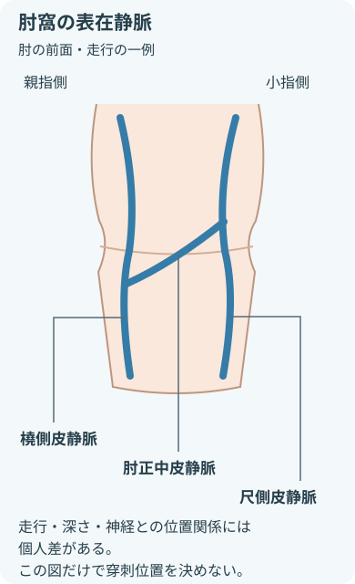

注意事項
採血前
- 複数の識別情報で本人を確認する。
- 検査項目とラベルを照合する。
- 結果に影響する条件の確認例
- 採血時刻
- 食事
- 安静
- 体位
- 点滴
- 部位選択に関わる確認例
- 皮膚障害
- 感染
- 血腫
- 浮腫
- 麻痺
- 知覚障害
- 透析シャント
- 手術歴
- 既往・薬剤・アレルギーの確認
- 採血時の失神歴
- 出血傾向
- 抗凝固薬
- 消毒薬のアレルギー
- テープのアレルギー
採血中・採血後
- 中止・報告する症状
- 電撃痛
- 強い痛み
- しびれ
- 血管迷走神経反応の徴候例
- 顔面蒼白
- 冷汗
- 悪心
- めまい
- 抜針後は確実に止血する。ないことを確認する異常
- 腫脹
- 疼痛
- 出血
目的
- 診断や治療方針の決定に必要な血液検体を得る
- 治療効果や患者状態の変化を評価する
- 検査に適した品質の検体を採取する
- 患者誤認・検体取り違えを防ぐ
- 予防する合併症の例
- 神経損傷
- 血腫
- 針刺し
必要物品
- 手袋
- 手指衛生用品
- 指示された採血管（スピッツ）
- ラベル
- 安全機構付き採血針または翼状針
- ホルダー
- 駆血帯
- 消毒綿
- 清潔なガーゼ
- 固定用テープ
- 耐穿刺性の鋭利物廃棄容器
- 必要時：防水性エプロン
- 必要時：検体搬送容器
器材・採取量の選択
- 針の種類
- 針の太さ
- 採血管の本数
- 必要量
- 血管状態
- 検査項目
- 製品の電子添文
末梢静脈採血の基本手順

- 肘窩や前腕を観察し、実際の静脈の状態を確認する。
- 静脈の走行には個人差があるため、図だけで穿刺位置を決めない。
- 尺側皮静脈の深部には動脈・神経があり、損傷リスクに注意する。
- 指示と本人を確認する確認する項目
- 検査項目
- 採血管
- 採血条件
患者へ目的と流れを説明。
- 物品と環境を整える
- 必要物品を手元に準備。
- 鋭利物廃棄容器を近くに置く。
- 穿刺部位を選ぶ
- 観察する状態
- 皮膚
- 血管
- 安全に採血できる部位を選ぶ。
- 手指衛生・駆血・消毒を行う
- 駆血後に血管を確認。
- 穿刺部位を消毒し、十分に乾燥させる。
- 穿刺し、採血する観察する項目
- 表情
- 痛み
- しびれ
- 気分不良
真空採血管は電子添文に従う。
- 抜針・止血する
- ガーゼで圧迫しながら抜針。
- 安全機構を作動させ、針を直ちに廃棄。
- 検体を仕上げる
- 規定どおり混和。
- 患者のそばでラベルを照合。
- 止血と全身状態を確認して提出。
- 角度は血管の深さと使用器材に合わせる。
- 採血中は腕・穿刺部位・採血管を下向きに保つ。
- 図は高さの関係を示し、器具の接続は示していない。
関連知識
採血管の順番
- 添加剤の混入を防ぐための代表的な採取順。
- 検査室の手順と採血管の電子添文を優先する。
- 表が画面に収まらない場合は横にスクロールできる。
- キーボードでは表にフォーカスして左右キーで移動する。
| 順番 | 採血管 | 主な検査分類 | 確認ポイント |
|---|---|---|---|
| 1 | 血液培養ボトル | 微生物 | 無菌操作と規定量を優先。 |
| 2 | 添加剤なし |
| 使用する場合のみ。 |
| 3 | クエン酸入り |
|
|
| 4 | 血清用 |
| 有無を確認
|
| 5 | ヘパリン入り | 生化学（血漿）など | 検査項目と添加剤を照合。 |
| 6 | EDTA入り |
| 採血後、規定どおり穏やかに混和。 |
| 7 | 解糖阻止剤入り |
| 必要量と混和回数を確認。 |
キャップの色だけで判断しない。製品・施設で異なる項目
- 色
- 添加剤
- 必要量
検査項目との組み合わせも検査室の手順で確認する。
主な合併症
- 神経損傷
- 注意する症状
- 電撃痛
- 強い痛み
- しびれ
- 運動の異常
- 知覚の異常
- 血管迷走神経反応
- 観察する徴候の例
- 気分不快
- めまい
- 冷汗
- 悪心
- 顔面蒼白
- 皮下血腫・止血困難
- 確認する異常
- 腫脹
- 疼痛
- 出血
- 針刺し・血液曝露
- リキャップしない。
- 安全機構を作動させて直ちに廃棄する。
検体品質を保つポイント
- 採血前後の照合
- 患者
- ラベル
- 検査項目
- 溶血予防のため避けること
- 長時間の駆血
- 強い吸引
- 採血管ごとに守る事項
- 必要量
- 混和方法
- 記録・共有する条件の例
- 採血時刻
- 体位
- 食事
- 輸液
- 搬送条件の確認例
- 温度
- 遮光
- 時間